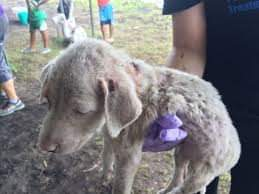
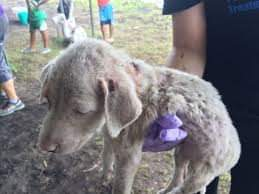

STORIES OF RESCUE
 

Rescued Date: April 25, 2012
Given Name: Boots
Age: 8 years old
Sex: Female
Year 2012 my Uncle (Mama's brother) found him on the street during the heavy rain.
Boots was not noticed immediately because the flood was high then and it was dark because it was early in the morning.
Boots is said to be looking for a possible climb. Case he could not get on the parked pedicab. He was picked up and taken to our house.
Boots was Spayed and now an indoor cat living with us.
Rescued Date: September 18, 2020
Given Name: Phoebe
Sex: Female
Age: Approximately 5 months
We had to rescue this dog yesterday at the mainroad because people were pimping him.
Others often think they have rabies or a serious illness.
It will be noticed that he has bleeding wounds.
He was also found eating garbage because someone put food there.
The worse is that he is almost run over because he is disoriented.
The pedicab driver said they were dropped off (2 dogs) from the vehicle, about 3 days ago. But there is no dog in the area.
Phoebe is now okay and totally recovered. He was also Spayed.